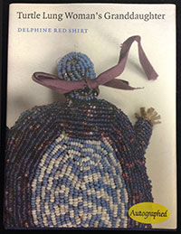
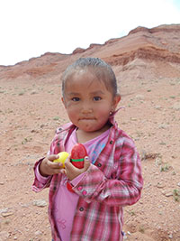

Born Goyathlay (One Who Yawns) in present day Clifton, Arizona, Geronimo’s name has become synonymous with a battle charge cry. Learn more about Geronimo.
]] replaceall]]History – Boarding Schools: Pratt’s motto was, “Kill the Indian, save the man.” By immersing Indians into the mainstream of American life, the “outing” system created by Pratt had students living among white families during the summer. Learn More about Boarding Schools
]] replaceall]] [[E130:[[T8:[[S51:reus_pwna_components]]]] dup dup "" indexof swap "" indexof substring "@alt" "History - Boarding Schools" replaceall "@src" "../pwna_assets/images/resources/feature2.gif" replaceall "@more-href" "PageServer?pagename=airc_res_nd_spiritlake" replaceall "@content" [[T8:Reservation – Spirit Lake: When it was established, most of the Spirit Lake Sioux Reservation residents worked in agriculture. Now, in addition to agriculture, the Tribe has established two plants that manufacture non-violent armaments such as camouflage nets and helmets… Read More
]] replaceall]] ]] replaceall]]About 40% of our country’s 4.9 million Native Americans live on reservations. Living conditions on the reservations have been cited as “comparable to Third World.”
In addition, many American Indians are living in substandard housing. About 40% of on-reservation housing is considered inadequate. Read More
]] replaceall]]Key events in the history of Native Americans include more than a hundred and fifty years of interaction with white settlers.
These events, often tragic and inaccurately documented, contain the historical roots of life today on the Northern Plains reservations. Here are only a few:
]] replaceall]]There have been many notable Native Americans down through the ages and although mainstream America has not included them in most of modern day history books, Native American lore has held them in high regard. We cannot erase the omissions of the past, but we can draw attention to at least a small number of the many outstanding Native Americans.
]] replaceall]]

There have been countless books written about Native Americans. And while we cannot list all of the books we would like to, we have compiled a good introduction to those who want to know more about Indian issues from an Indian perspective.
View all books
We have first-hand accounts from the Indian people we serve as well as newspapers, both Native American and main stream, and data obtained from well respected publications and research documents by noted authors. We have researched to provide an accurate and respectful look at the Indian people we work with and serve.
View all newspapers
Tribes that now live on the Northern Plains originally spanned an area from the Great Lakes in the north, to western Montana, and as far south and east as the lower Mississippi. These tribes hunted, fished and farmed. Beginning in the 1700s, many of these tribes acquired horses. This new mobility allowed them to become nomadic, and several tribes began following the buffalo herds of the Northern Plains.
To learn more about the Northern Plains reservations in which we serve, click the links below.
 Spread throughout harsh and isolated regions of Arizona, New Mexico, Utah and California, the reservations of Southwest Indians tribes are home to a rich diversity of tribes from the artistic Hopis of Arizona to the farming Laguna Pueblo of New Mexico and the sprawling Navajo nation which includes parts of Arizona, Colorado, Utah and New Mexico.
To learn more about the Southwest reservations in which we serve, click the links below.